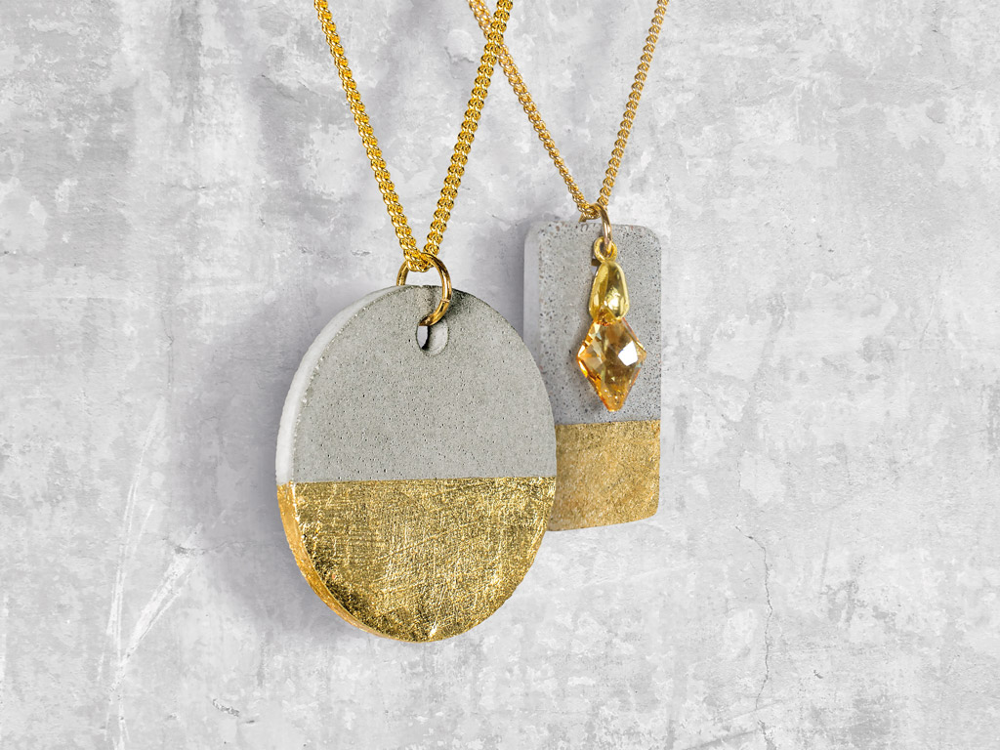

Cementas | Mokivezi.lt
Mūsų interneto svetainėje yra naudojami slapukai. Slapukai padeda užtikrinti tinkamą tinklapio veikimą bei jo tobulinimą, todėl būtinieji slapukai (techniniai, funkciniai bei analitiniai) yra įdiegiami automatiškai. Siekiant individualizuoti jūsų naršymo patirtį, tinklapyje taip pat naudojami tiksliniai slapukai. Paspaudę „sutinku“ Jūs sutinkate su tikslinių slapukų įdiegimu ir naudojimu. Savo sutikimą galėsite atšaukti bet kuriuo metu, pakeisdami savo interneto naršyklės nustatymus ir ištrindami įrašytus slapukus. Daugiau informacijos - a href= /kategorija/privatumo-politika/ privatumo politikoje /a . SUTINKU
Registruokis naujienlaiškiui
Ačiū! Naujienlaiškis užsakytas! Klaida užsakant naujienlaiškį. Susiekite su administratoriumi. Krepšelis 0 Jūsų krepšelis yra tuščias. pagalba@mokivezi.lt Prisijungti | Užsiregistruoti AUGALAI, SĖKLOS, SODINUKAI Kambariniai augalai Kaktusai Lapiniai kambariniai augalai Orchidėjos Žydintys kambariniai augalai Daugiamečiai augalai Krūmai Rododendrai ir azalijos Rožės Spygliuočiai Šliaužiantys augalai Gėlių svogūnėliai Begonijos Jurginai Kitos svogūninės gėlės Lelijos Vaiskrūmiai Kiti vaiskrūmiai Šilauogės Vynuogės Vaismedžiai Kiti vaismedžiai Vienmečiai augalai Gėlių daigeliai Vienmetės gėlės Vijokliniai augalai Gebenės Kiti vijokliniai augalai Raganės Sėklos ir sodinukai Daržovių sėklos Gėlių sėklos Prieskonių sėklos Sideratai Svogūnų sėjinukai Vejų sėklos Dekoratyvinės vejų sėklos Universalios vejų sėklos SODO PREKĖS Trąšos Daržovių trąšos Dekoratyviniams augalams Medelių balinimas Specialios trąšos Trąšos kambariniams augalams Universalios trąšos Vejoms Žemės Durpės Kapų žemės Papildomos žemės Sėjimo Sodo žemės Substratai Žemės kambariniams augalams Tvoros Kaldinto metalo gaminiai Metaliniai tvoros segmentai Metaliniai tvoros stulpai Metaliniai tvoros tinklai Plastikiniai tvoros tinklai Tvorų tvirtinimas ir aksesuarai Vartai, varteliai Aptvarai Elektriniai aptvarai Tinklai gyvūnams Sodo technika vejoms Aeratoriai, skarifikatoriai Sodo traktoriai Valai, tepalai Vejapjovės Žoliapjovės Sodo technika Gyvatvorių žirklės Grandininiai pjūklai Kultivatoriai Lapų pūstuvai Sniego valymo įranga Šakų smulkintuvai Aplinkotvarka Dekoratyvinė skalda, akmenys Mulčas Plastikinės vejų ribos Laistymo įranga ir priemonės Drėkinimo sistema Laistymo žarnos Laistymo purkštukai Laistymo jungtys Laistytuvai Slėginiai purkštuvai Šiltnamiai Plėveliniai šiltnamiai Polikarbonatiniai šiltnamiai Šiltnamio plėvelė Šiltnamių dalys Sodo rankiniai įrankiai Dalgiai Daržininko įrankiai Grėbliai Kirviai Lauko šepečiai ir šluotos Sniego valymo įrankiai Sodo įrankiai kasimui Sodo įrankiai kirpimui Šakės Sodo mediena Markizės ir pastogės Mediniai stulpai, kuolai, atramos Mediniai tvoros segmentai Terasinės lentos ir plytelės Tvorelės (balkonams ir medelynams) Sodo dangos Agroplėvelės Geotekstilė Augalų apsauga Fungicidai Herbicidai Insecticidai Pagalbinės priemonės Sodo skulptūros ir dekoracijos Sodo dekoracijos Sodo skulptūros ir girdyklos Lauko Vazonai Kiti lauko vazonai Lauko keraminiai vazonai Plastikiniai lauko vazonai Kapų tvarkymo prekės Kapų dirbtinės gėlės, vainikai Kapų vazos Kapų žvakės Kambarinių augalų atramos Kitos kambarinės atramos Kokosinės augalų atramos Metaliniai stovai Vazonų padėklai Kambariniai vazonai Kambariniai keraminiai vazonai Kiti kambariniai vazonai Orchidėjų vazonai Plastikiniai kambariniai vazonai Lauko augalų atramos Aksesuarai, tvirtinimo prekės Bambukinės augalų atramos Metalinės augalų atramos Daiginimo talpos Daiginimo padėklai Daigyklos Vazonėliai Priemonės nuo kenkėjų Bioproduktai Graužikams Kitiems kenkėjams Tinklai nuo paukščių Tinkleliai tekstiliniai, plastikiniai Vabzdžiams Sodo karučiai Sodo karučiai Sodo karučių dalys Talpos Bakai ir bakeliai Kibirai sodui Maišai Vandens talpyklos Vonelės Sodo įranga Biotualetai ir jų chemijos priemonės Lauko dušai Daržininko apranga Daržininko avalynė Laisvalaikio avalynė Sodo pirštinės Dekoratyviniai sodo baseinai ir fontanai ĮRANKIAI, SAUGOS PREKĖS Elektriniai rankiniai įrankiai Elektrinės orapūtės Elektriniai daugiafunkciniai įrankiai Elektrinės frezos Elektriniai dažų purkštuvai Elektriniai galąstuvai Elektriniai gręžtuvai, suktuvai Elektriniai obliai Elektriniai perforatoriai Elektriniai pjūklai, siaurapjūkliai Elektriniai šlifuokliai, poliruokliai Elektrinių įrankių komplektai Įrankių akumuliatoriai Specialios paskirties įrankiai Pjovimo įrankiai Dildės Kampų suleidimo įrankiai Peiliai, grandikliai Pjūklai Plytelių pjovimo įrankiai ir priedai Suvirinimo įranga Dujos Dujų balionai Dujų balionų degikliai Klijų pistoletai ir priedai Suvirinimo aparatai Suvirinimo elektrodai Suvirinimo, litavimo priedai Įrankių dėžės Darbastaliai ir spintelės Įrankių dėklai Įrankių dėžės Smulkmenų dėžutės Statybiniai šildytuvai Dyzeliniai šildytuvai Dujiniai šildytuvai Elektriniai šildytuvai Kopėčios Atremiamos kopėčios Kopėčių priedai Universalios kopėčios Kėlimo įranga Keltuvai Krovinių vežimėliai Dujos, dujų įranga Dujų pajungimo, reguliavimo armatūra Užpildomi dujų balionai Užpildomos dujos Saugos ženklai Darbinės pirštinės Darbo avalynė Darbo drabužiai Apranga Šlifavimo medžiagos ir įrankiai Šlifavimo diskai Šlifavimo juostos ir lapeliai Šlifavimo kempinės Šlifavimo priedai Šlifavimo tinkleliai Vieliniai šepečiai Elektrinės staklės Malkų skaldyklės Pjovimo staklės Staklių priedai Šlifavimo staklės Matavimo įrankiai Gulsčiukai Liniuotės, kampainiai Lotai Matavimo prietaisai Ruletės, metrai Specialūs matavimo įrankiai Žymėjimo priemonės Kalimo įrankiai Kaltai Laužtuvai Obliai Plaktukai, kūjai Rankiniai įrankiai Tvirtinimo įrankiai 12 Atsuktuvai Fiksavimo įrankiai ir priedai Galvutės, priedai Įrankių tvirtinimui komplektai Raktai Replės Spaustuvai Žirklės metalui Žnyplės Statybiniai siurbliai Dulkių siurbliai Dulkių siurblių priedai Statybinė įranga Benzininiai betono pjūklai Benzininiai grąžtai Betono maišyklės Plovimo įranga Plovyklos Valymo įrenginiai Valymo įrenginių priedai Kompresoriai Kompresorių priedai Pneumatiniai įrankiai Pneumatinių įrankių priedai Tepaliniai kompresoriai Grąžtai Grąžtai betonui Grąžtai medžiui Grąžtai metalui Grąžtai stiklui Grąžtai universalūs Grąžtų priedai Sriegikliai, priedai Benzininiai generatoriai Elektrinių įrankių priedai Elektrinių įrankių dalys Elektrinių įrankių stovai Pjovimo priedai Sukimo priedai STATYBINĖS MEDŽIAGOS Metalo gaminiai Aliuminio kampai, vamzdžiai, kita Armatūra Kampuočiai, juostos, strypai Vamzdžiai Viela Armavimo tinklai Austi metalo tinklai Priedai betonavimui Trinkelės Betono trinkelės, plytelės Borteliai, kiti gaminiai Granito trinkelės Klinkerinės Trinkelės Tinkas, klijai šiltinimo sistemai Akrilinis tinkas Mineralinis tinkas Silikatiniai, silikoniniai tinkai Šiltinimo medžiagų klijai, armavimo mišiniai Statybinės plokštės Faneros gaminiai Orientuotų skiedrų plokštės Statybinė plėvelė Antikondensacinės, garo plėvelės Polietileno plėvelės Plytos, blokai, betono gaminiai Apdailinės plytos Keraminės statybinės plytos Silikatinės plytos Šamotinės plytos Akyto betono blokeliai ir sąramos Betoniniai blokeliai Keraminiai blokeliai ir sąramos Keramzitiniai blokeliai ir sąramos Silikatiniai blokeliai Stogų danga Bituminiai lakštai Prilydoma stogo danga Cementinė stogo danga Stogo sandarinimo juostos Ventiliacijos elementai Cinkuoti lakštai Lygi metalinė stogo danga Profiliuota metalinė stogo danga Cinkuoti metaliniai lankstiniai Spalvoti metaliniai lankstiniai Organinis stiklas PVC dangos priedai PVC lakštai Stogeliai Langai, laiptai, durys Palangės medinės PVC durys Medžio masyvo durys Laminuotos durys Faneruotos durys Durų staktos Durų apvadai Dažytos vidaus durys Palangės PVC Laiptų komplektai Metalinės lauko durys Medinės lauko durys Langai Turėklų sistemos Palėpės laiptai Mediniai laiptai ir jų dalys Nutekėjimo sistema Metaliniai latakai, lietvamzdžiai Metaliniai lietaus nutekėjimo priedai PVC latakai, lietvamzdžiai PVC lietaus nutekėjimo priedai Apšiltinimo medžiagos Grindinės vatos plokštės Vėjo izoliacinės vatos plokštės Birios vatos izoliacijos Universalios vatos plokštės Medienos gaminiai Apdailos juostelės, kampai Grindjuostės Pirties mediena Skydai, lentynos Tąšeliai Impregnuota mediena Neimpregnuota mediena Glaistai, klijai, kita Glaistai plytelių tarpams Sausi glaistai apdailai Gipso klijai Kiti sausi klijai Plytelių klijai GKP sistema GKP Aliuminiai glaistymo kampai Juostos Profiliai GKP Profilių tvirtinimo detalės Fasado sistema Cokoliniai profiliai fasadui ir priedai Kampai fasadui Plastikiniai fasado profiliai ir priedai Fasado danga Fibrocementinė apkala Siding apkala Birios statybinės medžiagos Betonas Išlyginamieji mišiniai Statybinė chemija Cementas Smėlis, žvyras, kitos birios statybinės medžiagos Cementiniai mūro tinko mišiniai Gipsiniai tinko mišiniai Baldinės plokštės Laminuotos medžio drožlių plokštės TVIRTINIMO MEDŽIAGOS, FURNITŪRA Inkarai, kaiščiai Cheminiai inkarai Inkariniai sraigtai Inkariniai varžtai Kaiščiai Kalami kaiščiai Sanitariniai kaiščiai Sukami kaiščiai Virvės, grandinės, lynai Austos juostos, stropai Grandinės Pintos virvės Plieniniai lynai Spalvoto metalo vielos Suktos virvės Špagatai Takelažas ir priedai Tamprios virvės Tinklai Vinys Apdailinės, dekoratyvinės vinys Statybinės vinys Stoginės vinys Sukti, rėvėti vinys Savisriegiai sraigtai Savigręžiai sraigtai įleidžiama galva Savigręžiai sraigtai praplatinta galva Savigręžiai sraigtai pusapvale galva Savigręžiai sraigtai šešiakampe galva Savisriegiai sraigtai praplatinta galva Savisriegiai sraigtai pusapvale galva Stogų sraigtai ir kepurėlės Metrinio sriegio tvirtinimo detalės Spyruoklinės poveržlės Veržlės su kapronu Veržlės su auselėmis Varžtai šešiakampe galva Varžtai pusapvale galva su fiksacija Varžtai pusapvale galva Varžtai įleidžiama galva Varžtai dvipusiu sriegiu Varžtai cilindrine galva Sriegti strypai Gaubtinės veržlės Siauros poveržlės Prailgintos veržlės Plačios poveržlės Paprastos veržlės Nerūdijančio plieno metrika Kitos veržlės Kiti varžtai Medsraigčiai Medsraigčiai šešiakampe galva Medsraigčiai universalūs Medsraigčiai universalūs torx Specialios paskirties medsraigčiai Terasiniai medsraigčiai Termoizoliacijos tvirtinimas Termoizoliacijos tvirtinimo priedai Termoizoliaciniai kaiščiai Medinių konstrukcijų tvirtinimo elementai Atramos medienai Kabės dailylentėms Kampai Plokštelės Sijų, gegnių tvirtinimo elementai Laikikliai, sąvaržos Sąvaržos Vamzdžių laikikliai metaliniai Vamzdžių laikikliai plastikiniai Baldinė įranga Lentynos, lentynų laikikliai Sieniniai laikikliai Surenkama drabužinė GKP tvirtinimas GKP sraigtai medžiui GKP sraigtai metalui Kaiščiai į GKP Spynos, rankenos Apyraktės, užsuktukai Cilindrai Dėžučių, spintelių spynelės Durų rankenos Įleidžiamos spynos be rankenų Įleidžiamos spynos su rankenom Langų furnitūra Pakabinamos spynos Pridedamos spynos Skląsčiai, kabliukai Seifai, pašto dėžutės Pašto dėžutės Rakinamos dėžutės Seifai Ratukai Ratukai Ratukų dalys Durų furnitūra Atramos, atmušos Durų vyriai, pritraukėjai Kitos furnitūros dalys Numeriai, vėliavų laikikliai Vartų, vartelių vyriai, lankstai Baldų smulkioji furnitūra Baldinės furnitūros priedai Laikikliai, jungtys Padukai, apkaustai Baldų dekoratyvioji furnitūra Kabliukai, pakabos VENTILIACIJOS ĮRANGA Ortakių sistemos Grotelės, difuzoriai Ortakiai aliuminiai nerūdijančio plieno Ortakių sistema cinkuota Ortakių sistema plastikinė Revizinės durelės Ventiliaciniai kaminėliai Ventiliacijos įrengimai Buitiniai ištraukimo ventiliatoriai ELEKTROS APŠVIETIMAS IR INSTALIACIJA Dekoratyviniai šviestuvai Pakabinami šviestuvai Pastatomi šviestuvai, toršerai Sieniniai šviestuvai Staliniai šviestuvai Šviestuvai su gaubtu, plafonai Vaikiški šviestuvai Elektros lemputės Halogeninės lempos Kaitrinės lempos LED lempos Liuminescencinės lempos Specialios paskirties lempos Taupiosios lempos Elektros instaliacija Antgaliai, jungtys Dirželiai Elektros indikatoriai, testeriai Gofruoti vamzdžiai Kabelio laikikliai Kaladėlės Kanalai LED profiliai ir jų priedai Termoizoliaciniai vamzdeliai Įmontuojami elektros šviestuvai Įmontuojami be lempučių Įmontuojami su LED LED panelės Lauko šviestuvai Lauko šviestuvai Prožektoriai Saulės energijos lauko šviestuvai Techniniai elektros šviestuvai LED šviestuvai Liuminescenciniai šviestuvai Pernešami šviestuvai Specialiųjų patalpų šviestuvai Kitos apšvietimo prekės Davikliai, jutikliai Droseliai, transformatoriai LED juostos Lempų lizdai Žibintai, rankiniai žibintuvėliai Elektros automatika Automatikos priedai Automatiniai išjungėjai Saugikliai Skaitikliai Skydeliai Elektros dėžutės Instaliacinės montažinės Instaliacinės paskirtstymo Elektros ilgikliai Adapteriai Būgniniai ilgikliai Buitiniai ilgikliai Kištukai Laikmačiai Lauko ilgikliai Šakotuvai Elektros kabeliai Instaliaciniai kabeliai Jėgos kabeliai Specialios paskirties kabeliai UTP kabeliai Vaizdo kabeliai Elektros maitinimo šaltiniai Įkraunami elementai, įkrovikliai Sausieji elementai Elektros skambučiai Skambučiai nuo elektros tinklo Skambučiai su elementais Jungtukai, kištukiniai lizdai Jungikliai Kištukiniai lizdai Lizdai blokai Perjungikliai Rėmeliai Specialios paskirties jungtys Šviesos reguliatoriai TV, UTP lizdai GRINDŲ IR SIENŲ DANGOS Tapetai Fototapetai Radiatorių šilumos ekranai Skysti tapetai Stiklo audinio tapetai Viniliniai tapetai Grindų dangos Grindys-kitos Grindų dangų paklotas Grindys-Laminatas Grindys-Parketlentės Grindys-sujungimo-juostelės Grindjuosčių detalės Plastikinės grindjuostės Grindys-Vinilinė grindų danga Kilimai-durų Durų kilimėliai Kilimai-kiliminė danga Kilimai Kiliminiai takai Kilimai-PVC danga Lubų apdaila Lubų apdailos profiliai ir detalės Akmens masės plytelės Fasado plytelės Dekoratyvinės plytelės Dekoratyvinės plytelės, apvadai Keraminės plytelės Klinkerio plytelės Mozaika Mozaika Natūralaus ir dekoratyvinio akmens plytelės Natūralaus ir dekoratyvinio akmens plytelės Kampukai plytelėms Plytelių kryželiai Kamštinė sienų apdaila Sienų apdaila PVC sienų apdaila DAŽAI IR PARUOŠIMO MEDŽIAGOS Dažai Aerozoliniai dažai Antikoroziniai dažai Emalės Fasadiniai dažai Specialios paskirties dažai Vandeniniai vidaus dažai Dekoratyviniai dažai ir priedai Skeldėjantis lakas Struktūriniai dažai Įrankiai dažymui Dažymo glaistyklės, grandikliai Dažymo rankenos, kotai ir kiti priedai Dažymo vonelės, kibirai Kiti dažymo įrankiai Komplektai dažymui Pistoletai Teptukai Voleliai Medienos dekoravimo, apsaugos priemonės Aliejus medienai Antipirenai Medienos antiseptikai Medienos glaistai Medienos impregnantai Priemonės prieš pelėsį, grybus Klijai Grindų dangų klijai Pistoletiniai klijai Tapetų klijai Universalūs klijai Valikliai Skiedikliai Valikliai Lakai Gruntinis lakas Išorės lakas Vidaus lakas Gruntai Gruntas metalui Gruntas mineraliniams paviršiams Montavimo putos Klijuojančios putos Poliuretaninių putų valikliai Profesionalios montavimo putos Šiaudelinės putos Hermetikai Hermetikai akriliniai Hermetikai plytelių tarpams Hermetikai silikoniniai Hidroizoliacija Hidroizoliacinė mastika Hidroizoliacinės juostos Hidroizoliacinis gruntas Juostelės, plėvelės Dažymo juostelės Elektros izoliacinės juostelės Glaistymo juostos Įspėjamosios juostos Kitos juostelės Pakavimo juostelės Plevelės, popierius, kartonas Sandarinimo juostos Tvirtinimo juostelės BUITINĖ TECHNIKA Vaizdo, garso ir kompiuterinė technika Antenos Kompiuterių ir telefonų prekės TV ir audio prekės Buities prietaisai Buitiniai dulkių siurbliai Grožio, kūno priežiūros priežiūros Lygintuvai Smulkūs buities prietaisai Klimato kontrolės prietaisai Drėgmės surinktuvai Oro drėkintuvai Šildytuvai Ventiliatoriai Smulki virtuvės technika Kavos ruošimo prietaisai Maisto ruošimo prietaisiai Plaktuvai, smulkintuvai, trintuvai Skrudintuvai, keptuvai Sulčiaspaudės Vaisių džiovintuvai Virduliai ŠILDYMO ĮRANGA Granulės, briketai, anglis Akmens anglis Briketai Granulės Grindinis šildymas Grindinio šildymo vamzdžiai Montavimo įranga Šildymo elektriniai kilimėliai Šildymo kabeliai Valdymo įranga Vandens šildytuvai Elektriniai vandens šildytuvai Kombinuoti vandens šildytuvai Vandens šildytuvų dalys Kaminai, dūmtraukiai Kaminų valymo priemonės Krosnių dūmtraukiai Katilai, židiniai Katilai Katilai granuliniai Katilai-viryklės Krosnelės Židiniai Katilinių įranga Akumuliacinės talpos Cirkuliaciniai siurbliai Išsiplėtimo indai Katilinių armatūra Katilinių valdymo įranga Kolektoriai Katilų, židinių dalys Ketaus durelės Ketaus grotelės Ketaus sklendės Ketaus viryklės, orkaitės Sandarinimo virvės Radiatoriai Aliuminio radiatoriai ir jų dalys Apatinio jungimo radiatoriai Radiatorių komplektuojančios dalys Renovaciniai radiatoriai Pirties prekės Pirties aksesuarai 10 Pirties kosmetika Pirties reikmenys Pirties įranga 10 Pirties įrangos prekės Pirties krosnelės Kondicionavimo įranga SANTECHNINĖ IR VONIOS KAMBARIO ĮRANGA Vonios Akrilinės vonios Plieninės vonios Vonios komplektuojančios dalys Vonios baldai Vonios baldai Vonios veidrodžiai Maišytuvai Bidė maišytuvai Dušo komplektai, dalys Dušo maišytuvai Plautuvės maišytuvai Praustuvo maišytuvai Vonios maišytuvai Rankšluoščių džiovintuvai Elektriniai džiovintuvai Elektriniai, konvekciniai šildytuvai Rankšluosčių džiovintuvų priedai Vandeniniai juodo metalo Vandeniniai nerūdijančio plieno Dušo kabinos Dušo kabinos Dušo kabinų priedai Dušo padėklai Masažinės dušo kabinos Klozetai Bidė, pisuarai Klozeto dangčiai Pakabinami klozetai Pastatomi klozetai WC komplektai su potinkiniu rėmu Plautuvės Akmens masės plautuvės Plieninės plautuvės Praustuvai Praustuvai Sifonai ir jų dalys Lanksčios žarnos Nuleidimo, prileidimo mechanizmai Potinklinės sistemos, mygtukai Sifonai ir ju dalys WC pajungimo elementai Vonios ir WC Aksesuarai Karnizai, žiedai voniai Kiti vonios aksesuarai Lentynėlės, kabyklos, kabliukai Muilinės Pastatomi aksesuarai Popieriaus laikikiliai Pramoniniai laikikliai, dozatoriai Užuolaidos, priedai voniai Vonios aksesuarai neįgaliesiems Vonios kilimėliai WC kilimėliai WC šepečiai VANDENTIEKIS, KANALIZACIJA Nuotekų įranga Drenažas Batų valymo įranga Drenažo sistemos priedai Drenažo sistemos vamzdžiai Latakai plastikiniai Latakai polimerbetoniai Kanalizacija Betriukšmė kanalizacija Kanalizacijos valymo priemonės Lauko kanalizacija Valymo įrengimai Vidaus kanalizacija Vidaus trapai Šulinių sistema Šuliniai Šulinių dangčiai Šulinių sistemos dalys Santechnikos įranga Santechnikos medžiagos Eksploatacinė chemija Sandarinimo chemija Sandarinimo medžiagos Tarpinės, jungtys Srieginės jungtys Bronzinės jungtys Chromuotos bronzinės jungtys Ventiliai Dujų ventiliai sklendės Rutuliniai ventiliai Sodo ventiliai, sklendės Vandentiekio įranga Lituojamo vamzdyno sistema (PPR) Lituojami vamzdžiai (PPR) Lituojamos jungtys (PPR) PE vamzdyno sistema PE geriamo vandens vamzdžiai Techniniai vamzdžiai Plieninio ir ketinio vamzdyno sistema Plieninės jungtys Plieniniai vamzdžiai Daugiasluoksnio vamzdyno sistema Daugiasluoksniai vamzdžiai Presuojamos jungtys Smartfix jungtys Šarvas vamzdžiui Užveržiamos jungtys Prietaisinės jungtys Atsarginės dalys maišytuvams Prietaisiniai vamzdeliai Prietaisiniai ventiliai Prietaisų pajungimo detalės Vandens skaitikliai Siurbliai Drenažiniai siurbliai Giluminiai siurbliai Hidroforų indai Siurbliai be rezervuaro Siurblių dalys Vandens tiekimo sistemos Vibraciniai siurbliai Vamzdžių izoliacija Dembliai Kevalai pūsto polietileno Vandens filtravimas Druska filtrams ir priedai Filtrų dalys Filtrų sistemos Kasetės Vandens filtrai Žarnelės Dujų žarnelės Techninės žarnos Vandens žarnelės AUTOMOBILIŲ PREKĖS Automobilių prekės Padangos Akumuliatoriai ir jų priedai Auto įrankiai Automobilių dalys Automobilių eksplotavimo priemonės Automobilių aksesuarai Elektroniniai aksesuarai Išoriniai aksesuarai Kvapai Vidiniai aksesuarai Automobilių chemija Alyvos Aušinimo skysčiai Dažai, remonto priemonės Kosmetika, priežiūros priemonės Langų plovimo skysčiai Specialios paskirties priedai Automobilių priekabos Automobilių priekabos Automobilių priekabų dalys LAISVALAIKIS IR TURIZMAS Kepsninės ir priedai Anglies kepsninės Anglys, malkos Dujinės kepsninės Elektrinės kepsninės Kepsninių priedai Lauko židiniai Šašlykinės Ugnies įkūrimo produktai Sodo baldai Mediniai sodo baldai Metaliniai sodo baldai Plastikiniai sodo baldai Vaikiški sodo baldai Kėdžių pagalvėlės Sodo pavėsinės Pavėsinės Skėčiai Tentai Pramogoms lauke Baseinai ir priedai Pripučiamios prekės Vasaros sportas, žvejyba Žaislai Batutai Turizmo prekės Čiužiniai Miegmaišiai Palapinės Stovyklavimo priedai Turistinės kėdės Renginiams ir vakarėliams Vėliavos Apšvietimas vakarėliams Dovanų pakavimas Renginių aksesorika Prekės dviračiams Dviračių aksesuarai Dviračių dalys ir eksplotacijos priemonės Dviratininkų aksesuarai NAMŲ IR BUITIES PREKĖS Namų aksesuarai Dekoratyviniai akmenukai Dirbtinės, tekstilinės, džiovintos gėlės ir jų priedai Klijuotės, plėvelės Namų dekoravimo prekės Namų kvapai, smilkalai Statulėlės, figūrėlės Vazos Žvakės, žvakidės Virtuvės ir stalo reikmenys Keptuvės Maistinis popierius, folija, plėvelė Maisto ruošimo indai ir įrankiai Produktų laikymo, hermetiniai ir kiti indai Puodai Stalo serviravimo indai Stalo serviravimo įrankiai Stiklainiai ir dangteliai Taurės, stiklinės, ąsočiai Termosai Vienkartiniai indai Namų tekstilė Patalynė Pagalvėlės Pledai, lovatiesės Stalo padėkliukai, servetėlės Staltiesės Namų apyvoka Buitinės kopėčios, pakylos Buitinės pirštinės Buitiniai reikmenys (termometrai, svarstyklės) Dubenys, kibirai PVC Džiovyklos Krepšeliai, skalbinių krepšiai Lyginimo lentos Karnizai, užuolaidos Bėgeliai užuolaidoms, aksesuarai Romanetės, ritininės užuolaidos, žaliuzės Vieliniai karnizai Daiktų sandėliavimas Daiktadėžės Medinės lentynos Metalinės lentynos Plastikinės lentynos Valymo reikmenys Kempinės ir šluostės Langų valytuvai Šepečiai ir šluotos Valymo rinkiniai, kibirai Buitinė chemija Indų plovikliai Skalbimo priemonės Valikliai ir buitinė chemija Atliekų tvarkymas Šiukšlių maišai Vidaus šiukšliadėžės Higieninis popierius Popieriniai rankšluosčiai Tualetinis popierius Vienkartinės nosinaitės Higienos prekės Higiena Baldai Vidaus baldai GYVŪNŲ PREKĖS Gyvūnų maistas Šunims Katėms Gyvūnų maistas (paukščių, graužikų, žuvų pašarai) Aksesuarai gyvūnams Inkilai, lesyklos Kraikas Prekių katalogas AKCIJOS IDĖJOS IR PATARIMAI LEIDINIAI DIDMENINĖ PREKYBA PARDUOTUVĖS Katalogas AUGALAI, SĖKLOS, SODINUKAI SODO PREKĖS ĮRANKIAI, SAUGOS PREKĖS STATYBINĖS MEDŽIAGOS TVIRTINIMO MEDŽIAGOS, FURNITŪRA VENTILIACIJOS ĮRANGA ELEKTROS APŠVIETIMAS IR INSTALIACIJA GRINDŲ IR SIENŲ DANGOS DAŽAI IR PARUOŠIMO MEDŽIAGOS BUITINĖ TECHNIKA ŠILDYMO ĮRANGA SANTECHNINĖ IR VONIOS KAMBARIO ĮRANGA VANDENTIEKIS, KANALIZACIJA AUTOMOBILIŲ PREKĖS LAISVALAIKIS IR TURIZMAS NAMŲ IR BUITIES PREKĖS GYVŪNŲ PREKĖS Kambariniai augalai Kaktusai Lapiniai kambariniai augalai Orchidėjos Žydintys kambariniai augalai Daugiamečiai augalai Krūmai Rododendrai ir azalijos Rožės Spygliuočiai Šliaužiantys augalai Gėlių svogūnėliai Begonijos Jurginai Kitos svogūninės gėlės Lelijos Vaiskrūmiai Kiti vaiskrūmiai Šilauogės Vynuogės Vaismedžiai Kiti vaismedžiai Vienmečiai augalai Gėlių daigeliai Vienmetės gėlės Vijokliniai augalai Gebenės Kiti vijokliniai augalai Raganės Sėklos ir sodinukai Daržovių sėklos Gėlių sėklos Prieskonių sėklos Sideratai Svogūnų sėjinukai Vejų sėklos Dekoratyvinės vejų sėklos Universalios vejų sėklos Trąšos Daržovių trąšos Dekoratyviniams augalams Medelių balinimas Specialios trąšos Trąšos kambariniams augalams Universalios trąšos Vejoms Žemės Durpės Kapų žemės Papildomos žemės Sėjimo Sodo žemės Substratai Žemės kambariniams augalams Tvoros Kaldinto metalo gaminiai Metaliniai tvoros segmentai Metaliniai tvoros stulpai Metaliniai tvoros tinklai Plastikiniai tvoros tinklai Tvorų tvirtinimas ir aksesuarai Vartai, varteliai Aptvarai Sodo technika vejoms Aeratoriai, skarifikatoriai Sodo traktoriai Valai, tepalai Vejapjovės Žoliapjovės Sodo technika Gyvatvorių žirklės Grandininiai pjūklai Kultivatoriai Lapų pūstuvai Sniego valymo įranga Šakų smulkintuvai Aplinkotvarka Dekoratyvinė skalda, akmenys Mulčas Plastikinės vejų ribos Laistymo įranga ir priemonės Drėkinimo sistema Laistymo žarnos Laistymo purkštukai Laistymo jungtys Laistytuvai Slėginiai purkštuvai Šiltnamiai Plėveliniai šiltnamiai Polikarbonatiniai šiltnamiai Šiltnamio plėvelė Šiltnamių dalys Sodo rankiniai įrankiai Dalgiai Daržininko įrankiai Grėbliai Kirviai Lauko šepečiai ir šluotos Sniego valymo įrankiai Sodo įrankiai kasimui Sodo įrankiai kirpimui Šakės Sodo mediena Markizės ir pastogės Mediniai stulpai, kuolai, atramos Mediniai tvoros segmentai Terasinės lentos ir plytelės Tvorelės (balkonams ir medelynams) Sodo dangos Agroplėvelės Geotekstilė Augalų apsauga Fungicidai Herbicidai Insecticidai Pagalbinės priemonės Sodo skulptūros ir dekoracijos Sodo dekoracijos Sodo skulptūros ir girdyklos Lauko Vazonai Kiti lauko vazonai Lauko keraminiai vazonai Plastikiniai lauko vazonai Kapų tvarkymo prekės Kapų dirbtinės gėlės, vainikai Kapų vazos Kapų žvakės Kambarinių augalų atramos Kitos kambarinės atramos Kokosinės augalų atramos Metaliniai stovai Vazonų padėklai Kambariniai vazonai Kambariniai keraminiai vazonai Kiti kambariniai vazonai Orchidėjų vazonai Plastikiniai kambariniai vazonai Lauko augalų atramos Aksesuarai, tvirtinimo prekės Bambukinės augalų atramos Metalinės augalų atramos Daiginimo talpos Daiginimo padėklai Daigyklos Vazonėliai Priemonės nuo kenkėjų Bioproduktai Graužikams Kitiems kenkėjams Tinklai nuo paukščių Tinkleliai tekstiliniai, plastikiniai Vabzdžiams Sodo karučiai Sodo karučiai Sodo karučių dalys Talpos Bakai ir bakeliai Kibirai sodui Maišai Vandens talpyklos Vonelės Sodo įranga Biotualetai ir jų chemijos priemonės Lauko dušai Daržininko apranga Daržininko avalynė Laisvalaikio avalynė Sodo pirštinės Dekoratyviniai sodo baseinai ir fontanai Elektriniai rankiniai įrankiai Elektrinės orapūtės Elektriniai daugiafunkciniai įrankiai Elektrinės frezos Elektriniai dažų purkštuvai Elektriniai galąstuvai Elektriniai gręžtuvai, suktuvai Elektriniai obliai Elektriniai perforatoriai Elektriniai pjūklai, siaurapjūkliai Elektriniai šlifuokliai, poliruokliai Elektrinių įrankių komplektai Įrankių akumuliatoriai Specialios paskirties įrankiai Pjovimo įrankiai Dildės Kampų suleidimo įrankiai Peiliai, grandikliai Pjūklai Plytelių pjovimo įrankiai ir priedai Suvirinimo įranga Dujos Dujų balionai Dujų balionų degikliai Klijų pistoletai ir priedai Suvirinimo aparatai Suvirinimo elektrodai Suvirinimo, litavimo priedai Įrankių dėžės Darbastaliai ir spintelės Įrankių dėklai Įrankių dėžės Smulkmenų dėžutės Statybiniai šildytuvai Dyzeliniai šildytuvai Dujiniai šildytuvai Elektriniai šildytuvai Kopėčios Atremiamos kopėčios Kopėčių priedai Universalios kopėčios Kėlimo įranga Keltuvai Krovinių vežimėliai Dujos, dujų įranga Dujų pajungimo, reguliavimo armatūra Užpildomi dujų balionai Užpildomos dujos Saugos ženklai Darbinės pirštinės Darbo avalynė Darbo drabužiai Apranga Šlifavimo medžiagos ir įrankiai Šlifavimo diskai Šlifavimo juostos ir lapeliai Šlifavimo kempinės Šlifavimo priedai Šlifavimo tinkleliai Vieliniai šepečiai Elektrinės staklės Malkų skaldyklės Pjovimo staklės Staklių priedai Šlifavimo staklės Matavimo įrankiai Gulsčiukai Liniuotės, kampainiai Lotai Matavimo prietaisai Ruletės, metrai Specialūs matavimo įrankiai Žymėjimo priemonės Kalimo įrankiai Kaltai Laužtuvai Obliai Plaktukai, kūjai Rankiniai įrankiai Tvirtinimo įrankiai 12 Statybiniai siurbliai Dulkių siurbliai Dulkių siurblių priedai Statybinė įranga Benzininiai betono pjūklai Benzininiai grąžtai Betono maišyklės Plovimo įranga Plovyklos Valymo įrenginiai Valymo įrenginių priedai Kompresoriai Kompresorių priedai Pneumatiniai įrankiai Pneumatinių įrankių priedai Tepaliniai kompresoriai Grąžtai Grąžtai betonui Grąžtai medžiui Grąžtai metalui Grąžtai stiklui Grąžtai universalūs Grąžtų priedai Sriegikliai, priedai Benzininiai generatoriai Elektrinių įrankių priedai Elektrinių įrankių dalys Elektrinių įrankių stovai Pjovimo priedai Sukimo priedai Metalo gaminiai Aliuminio kampai, vamzdžiai, kita Armatūra Kampuočiai, juostos, strypai Vamzdžiai Viela Armavimo tinklai Austi metalo tinklai Priedai betonavimui Trinkelės Betono trinkelės, plytelės Borteliai, kiti gaminiai Granito trinkelės Klinkerinės Trinkelės Tinkas, klijai šiltinimo sistemai Akrilinis tinkas Mineralinis tinkas Silikatiniai, silikoniniai tinkai Šiltinimo medžiagų klijai, armavimo mišiniai Statybinės plokštės Faneros gaminiai Orientuotų skiedrų plokštės Statybinė plėvelė Antikondensacinės, garo plėvelės Polietileno plėvelės Plytos, blokai, betono gaminiai Apdailinės plytos Keraminės statybinės plytos Silikatinės plytos Šamotinės plytos Akyto betono blokeliai ir sąramos Betoniniai blokeliai Keraminiai blokeliai ir sąramos Keramzitiniai blokeliai ir sąramos Silikatiniai blokeliai Stogų danga Bituminiai lakštai Prilydoma stogo danga Cementinė stogo danga Stogo sandarinimo juostos Ventiliacijos elementai Cinkuoti lakštai Lygi metalinė stogo danga Profiliuota metalinė stogo danga Cinkuoti metaliniai lankstiniai Spalvoti metaliniai lankstiniai Organinis stiklas PVC dangos priedai PVC lakštai Stogeliai Langai, laiptai, durys Palangės medinės PVC durys Medžio masyvo durys Laminuotos durys Faneruotos durys Durų staktos Durų apvadai Dažytos vidaus durys Palangės PVC Laiptų komplektai Metalinės lauko durys Medinės lauko durys Langai Turėklų sistemos Palėpės laiptai Mediniai laiptai ir jų dalys Nutekėjimo sistema Metaliniai latakai, lietvamzdžiai Metaliniai lietaus nutekėjimo priedai PVC latakai, lietvamzdžiai PVC lietaus nutekėjimo priedai Apšiltinimo medžiagos Grindinės vatos plokštės Vėjo izoliacinės vatos plokštės Birios vatos izoliacijos Universalios vatos plokštės Medienos gaminiai Apdailos juostelės, kampai Grindjuostės Pirties mediena Skydai, lentynos Tąšeliai Impregnuota mediena Neimpregnuota mediena Glaistai, klijai, kita Glaistai plytelių tarpams Sausi glaistai apdailai Gipso klijai Kiti sausi klijai Plytelių klijai GKP sistema GKP Aliuminiai glaistymo kampai Juostos Profiliai GKP Profilių tvirtinimo detalės Fasado sistema Cokoliniai profiliai fasadui ir priedai Kampai fasadui Plastikiniai fasado profiliai ir priedai Fasado danga Fibrocementinė apkala Siding apkala Birios statybinės medžiagos Betonas Išlyginamieji mišiniai Statybinė chemija Cementas Smėlis, žvyras, kitos birios statybinės medžiagos Cementiniai mūro tinko mišiniai Gipsiniai tinko mišiniai Baldinės plokštės Laminuotos medžio drožlių plokštės Inkarai, kaiščiai Cheminiai inkarai Inkariniai sraigtai Inkariniai varžtai Kaiščiai Kalami kaiščiai Sanitariniai kaiščiai Sukami kaiščiai Virvės, grandinės, lynai Austos juostos, stropai Grandinės Pintos virvės Plieniniai lynai Spalvoto metalo vielos Suktos virvės Špagatai Takelažas ir priedai Tamprios virvės Tinklai Vinys Apdailinės, dekoratyvinės vinys Statybinės vinys Stoginės vinys Sukti, rėvėti vinys Savisriegiai sraigtai Savigręžiai sraigtai įleidžiama galva Savigręžiai sraigtai praplatinta galva Savigręžiai sraigtai pusapvale galva Savigręžiai sraigtai šešiakampe galva Savisriegiai sraigtai praplatinta galva Savisriegiai sraigtai pusapvale galva Stogų sraigtai ir kepurėlės Metrinio sriegio tvirtinimo detalės Spyruoklinės poveržlės Veržlės su kapronu Veržlės su auselėmis Varžtai šešiakampe galva Varžtai pusapvale galva su fiksacija Varžtai pusapvale galva Varžtai įleidžiama galva Varžtai dvipusiu sriegiu Varžtai cilindrine galva Sriegti strypai Gaubtinės veržlės Siauros poveržlės Prailgintos veržlės Plačios poveržlės Paprastos veržlės Nerūdijančio plieno metrika Kitos veržlės Kiti varžtai Medsraigčiai Medsraigčiai šešiakampe galva Medsraigčiai universalūs Medsraigčiai universalūs torx Specialios paskirties medsraigčiai Terasiniai medsraigčiai Termoizoliacijos tvirtinimas Termoizoliacijos tvirtinimo priedai Termoizoliaciniai kaiščiai Medinių konstrukcijų tvirtinimo elementai Atramos medienai Kabės dailylentėms Kampai Plokštelės Sijų, gegnių tvirtinimo elementai Laikikliai, sąvaržos Sąvaržos Vamzdžių laikikliai metaliniai Vamzdžių laikikliai plastikiniai Baldinė įranga Lentynos, lentynų laikikliai Sieniniai laikikliai Surenkama drabužinė GKP tvirtinimas GKP sraigtai medžiui GKP sraigtai metalui Kaiščiai į GKP Spynos, rankenos Apyraktės, užsuktukai Cilindrai Dėžučių, spintelių spynelės Durų rankenos Įleidžiamos spynos be rankenų Įleidžiamos spynos su rankenom Langų furnitūra Pakabinamos spynos Pridedamos spynos Skląsčiai, kabliukai Seifai, pašto dėžutės Pašto dėžutės Rakinamos dėžutės Seifai Ratukai Ratukai Ratukų dalys Durų furnitūra Atramos, atmušos Durų vyriai, pritraukėjai Kitos furnitūros dalys Numeriai, vėliavų laikikliai Vartų, vartelių vyriai, lankstai Baldų smulkioji furnitūra Baldinės furnitūros priedai Laikikliai, jungtys Padukai, apkaustai Baldų dekoratyvioji furnitūra Kabliukai, pakabos Ortakių sistemos Grotelės, difuzoriai Ortakiai aliuminiai nerūdijančio plieno Ortakių sistema cinkuota Ortakių sistema plastikinė Revizinės durelės Ventiliaciniai kaminėliai Ventiliacijos įrengimai Buitiniai ištraukimo ventiliatoriai Dekoratyviniai šviestuvai Pakabinami šviestuvai Pastatomi šviestuvai, toršerai Sieniniai šviestuvai Staliniai šviestuvai Šviestuvai su gaubtu, plafonai Vaikiški šviestuvai Elektros lemputės Halogeninės lempos Kaitrinės lempos LED lempos Liuminescencinės lempos Specialios paskirties lempos Taupiosios lempos Elektros instaliacija Antgaliai, jungtys Dirželiai Elektros indikatoriai, testeriai Gofruoti vamzdžiai Kabelio laikikliai Kaladėlės Kanalai LED profiliai ir jų priedai Termoizoliaciniai vamzdeliai Įmontuojami elektros šviestuvai Įmontuojami be lempučių Įmontuojami su LED LED panelės Lauko šviestuvai Lauko šviestuvai Prožektoriai Saulės energijos lauko šviestuvai Techniniai elektros šviestuvai LED šviestuvai Liuminescenciniai šviestuvai Pernešami šviestuvai Specialiųjų patalpų šviestuvai Kitos apšvietimo prekės Davikliai, jutikliai Droseliai, transformatoriai LED juostos Lempų lizdai Žibintai, rankiniai žibintuvėliai Elektros automatika Automatikos priedai Automatiniai išjungėjai Saugikliai Skaitikliai Skydeliai Elektros dėžutės Instaliacinės montažinės Instaliacinės paskirtstymo Elektros ilgikliai Adapteriai Būgniniai ilgikliai Buitiniai ilgikliai Kištukai Laikmačiai Lauko ilgikliai Šakotuvai Elektros kabeliai Instaliaciniai kabeliai Jėgos kabeliai Specialios paskirties kabeliai UTP kabeliai Vaizdo kabeliai Elektros maitinimo šaltiniai Įkraunami elementai, įkrovikliai Sausieji elementai Elektros skambučiai Skambučiai nuo elektros tinklo Skambučiai su elementais Jungtukai, kištukiniai lizdai Jungikliai Kištukiniai lizdai Lizdai blokai Perjungikliai Rėmeliai Specialios paskirties jungtys Šviesos reguliatoriai TV, UTP lizdai Tapetai Fototapetai Radiatorių šilumos ekranai Skysti tapetai Stiklo audinio tapetai Viniliniai tapetai Grindų dangos Grindys-kitos Grindys-Laminatas Grindys-Parketlentės Grindys-sujungimo-juostelės Grindys-Vinilinė grindų danga Kilimai-durų Kilimai-kiliminė danga Kilimai-PVC danga Lubų apdaila Lubų apdailos profiliai ir detalės Akmens masės plytelės Fasado plytelės Dekoratyvinės plytelės Dekoratyvinės plytelės, apvadai Keraminės plytelės Klinkerio plytelės Mozaika Mozaika Natūralaus ir dekoratyvinio akmens plytelės Natūralaus ir dekoratyvinio akmens plytelės Kampukai plytelėms Plytelių kryželiai Kamštinė sienų apdaila Sienų apdaila PVC sienų apdaila Dažai Aerozoliniai dažai Antikoroziniai dažai Emalės Fasadiniai dažai Specialios paskirties dažai Vandeniniai vidaus dažai Dekoratyviniai dažai ir priedai Skeldėjantis lakas Struktūriniai dažai Įrankiai dažymui Dažymo glaistyklės, grandikliai Dažymo rankenos, kotai ir kiti priedai Dažymo vonelės, kibirai Kiti dažymo įrankiai Komplektai dažymui Pistoletai Teptukai Voleliai Medienos dekoravimo, apsaugos priemonės Aliejus medienai Antipirenai Medienos antiseptikai Medienos glaistai Medienos impregnantai Priemonės prieš pelėsį, grybus Klijai Grindų dangų klijai Pistoletiniai klijai Tapetų klijai Universalūs klijai Valikliai Skiedikliai Valikliai Lakai Gruntinis lakas Išorės lakas Vidaus lakas Gruntai Gruntas metalui Gruntas mineraliniams paviršiams Montavimo putos Klijuojančios putos Poliuretaninių putų valikliai Profesionalios montavimo putos Šiaudelinės putos Hermetikai Hermetikai akriliniai Hermetikai plytelių tarpams Hermetikai silikoniniai Hidroizoliacija Hidroizoliacinė mastika Hidroizoliacinės juostos Hidroizoliacinis gruntas Juostelės, plėvelės Dažymo juostelės Elektros izoliacinės juostelės Glaistymo juostos Įspėjamosios juostos Kitos juostelės Pakavimo juostelės Plevelės, popierius, kartonas Sandarinimo juostos Tvirtinimo juostelės Vaizdo, garso ir kompiuterinė technika Antenos Kompiuterių ir telefonų prekės TV ir audio prekės Buities prietaisai Buitiniai dulkių siurbliai Grožio, kūno priežiūros priežiūros Lygintuvai Smulkūs buities prietaisai Klimato kontrolės prietaisai Drėgmės surinktuvai Oro drėkintuvai Šildytuvai Ventiliatoriai Smulki virtuvės technika Kavos ruošimo prietaisai Maisto ruošimo prietaisiai Plaktuvai, smulkintuvai, trintuvai Skrudintuvai, keptuvai Sulčiaspaudės Vaisių džiovintuvai Virduliai Granulės, briketai, anglis Akmens anglis Briketai Granulės Grindinis šildymas Grindinio šildymo vamzdžiai Montavimo įranga Šildymo elektriniai kilimėliai Šildymo kabeliai Valdymo įranga Vandens šildytuvai Elektriniai vandens šildytuvai Kombinuoti vandens šildytuvai Vandens šildytuvų dalys Kaminai, dūmtraukiai Kaminų valymo priemonės Krosnių dūmtraukiai Katilai, židiniai Katilai Katilai granuliniai Katilai-viryklės Krosnelės Židiniai Katilinių įranga Akumuliacinės talpos Cirkuliaciniai siurbliai Išsiplėtimo indai Katilinių armatūra Katilinių valdymo įranga Kolektoriai Katilų, židinių dalys Ketaus durelės Ketaus grotelės Ketaus sklendės Ketaus viryklės, orkaitės Sandarinimo virvės Radiatoriai Aliuminio radiatoriai ir jų dalys Apatinio jungimo radiatoriai Radiatorių komplektuojančios dalys Renovaciniai radiatoriai Pirties prekės Pirties aksesuarai 10 Pirties įranga 10 Kondicionavimo įranga Vonios Akrilinės vonios Plieninės vonios Vonios komplektuojančios dalys Vonios baldai Vonios baldai Vonios veidrodžiai Maišytuvai Bidė maišytuvai Dušo komplektai, dalys Dušo maišytuvai Plautuvės maišytuvai Praustuvo maišytuvai Vonios maišytuvai Rankšluoščių džiovintuvai Elektriniai džiovintuvai Elektriniai, konvekciniai šildytuvai Rankšluosčių džiovintuvų priedai Vandeniniai juodo metalo Vandeniniai nerūdijančio plieno Dušo kabinos Dušo kabinos Dušo kabinų priedai Dušo padėklai Masažinės dušo kabinos Klozetai Bidė, pisuarai Klozeto dangčiai Pakabinami klozetai Pastatomi klozetai WC komplektai su potinkiniu rėmu Plautuvės Akmens masės plautuvės Plieninės plautuvės Praustuvai Praustuvai Sifonai ir jų dalys Lanksčios žarnos Nuleidimo, prileidimo mechanizmai Potinklinės sistemos, mygtukai Sifonai ir ju dalys WC pajungimo elementai Vonios ir WC Aksesuarai Karnizai, žiedai voniai Kiti vonios aksesuarai Lentynėlės, kabyklos, kabliukai Muilinės Pastatomi aksesuarai Popieriaus laikikiliai Pramoniniai laikikliai, dozatoriai Užuolaidos, priedai voniai Vonios aksesuarai neįgaliesiems Vonios kilimėliai WC kilimėliai WC šepečiai Nuotekų įranga Drenažas Kanalizacija Šulinių sistema Santechnikos įranga Santechnikos medžiagos Srieginės jungtys Ventiliai Vandentiekio įranga Lituojamo vamzdyno sistema (PPR) PE vamzdyno sistema Plieninio ir ketinio vamzdyno sistema Daugiasluoksnio vamzdyno sistema Daugiasluoksniai vamzdžiai Presuojamos jungtys Smartfix jungtys Šarvas vamzdžiui Užveržiamos jungtys Prietaisinės jungtys Atsarginės dalys maišytuvams Prietaisiniai vamzdeliai Prietaisiniai ventiliai Prietaisų pajungimo detalės Vandens skaitikliai Siurbliai Drenažiniai siurbliai Giluminiai siurbliai Hidroforų indai Siurbliai be rezervuaro Siurblių dalys Vandens tiekimo sistemos Vibraciniai siurbliai Vamzdžių izoliacija Dembliai Kevalai pūsto polietileno Vandens filtravimas Druska filtrams ir priedai Filtrų dalys Filtrų sistemos Kasetės Vandens filtrai Žarnelės Dujų žarnelės Techninės žarnos Vandens žarnelės Automobilių prekės Padangos Akumuliatoriai ir jų priedai Auto įrankiai Automobilių dalys Automobilių eksplotavimo priemonės Automobilių aksesuarai Elektroniniai aksesuarai Išoriniai aksesuarai Kvapai Vidiniai aksesuarai Automobilių chemija Alyvos Aušinimo skysčiai Dažai, remonto priemonės Kosmetika, priežiūros priemonės Langų plovimo skysčiai Specialios paskirties priedai Automobilių priekabos Automobilių priekabos Automobilių priekabų dalys Kepsninės ir priedai Anglies kepsninės Anglys, malkos Dujinės kepsninės Elektrinės kepsninės Kepsninių priedai Lauko židiniai Šašlykinės Ugnies įkūrimo produktai Sodo baldai Mediniai sodo baldai Metaliniai sodo baldai Plastikiniai sodo baldai Vaikiški sodo baldai Kėdžių pagalvėlės Sodo pavėsinės Pavėsinės Skėčiai Tentai Pramogoms lauke Baseinai ir priedai Pripučiamios prekės Vasaros sportas, žvejyba Žaislai Batutai Turizmo prekės Čiužiniai Miegmaišiai Palapinės Stovyklavimo priedai Turistinės kėdės Renginiams ir vakarėliams Vėliavos Apšvietimas vakarėliams Dovanų pakavimas Renginių aksesorika Prekės dviračiams Dviračių aksesuarai Dviračių dalys ir eksplotacijos priemonės Dviratininkų aksesuarai Namų aksesuarai Dekoratyviniai akmenukai Dirbtinės, tekstilinės, džiovintos gėlės ir jų priedai Klijuotės, plėvelės Namų dekoravimo prekės Namų kvapai, smilkalai Statulėlės, figūrėlės Vazos Žvakės, žvakidės Virtuvės ir stalo reikmenys Keptuvės Maistinis popierius, folija, plėvelė Maisto ruošimo indai ir įrankiai Produktų laikymo, hermetiniai ir kiti indai Puodai Stalo serviravimo indai Stalo serviravimo įrankiai Stiklainiai ir dangteliai Taurės, stiklinės, ąsočiai Termosai Vienkartiniai indai Namų tekstilė Patalynė Pagalvėlės Pledai, lovatiesės Stalo padėkliukai, servetėlės Staltiesės Namų apyvoka Buitinės kopėčios, pakylos Buitinės pirštinės Buitiniai reikmenys (termometrai, svarstyklės) Dubenys, kibirai PVC Džiovyklos Krepšeliai, skalbinių krepšiai Lyginimo lentos Karnizai, užuolaidos Bėgeliai užuolaidoms, aksesuarai Romanetės, ritininės užuolaidos, žaliuzės Vieliniai karnizai Daiktų sandėliavimas Daiktadėžės Medinės lentynos Metalinės lentynos Plastikinės lentynos Valymo reikmenys Kempinės ir šluostės Langų valytuvai Šepečiai ir šluotos Valymo rinkiniai, kibirai Buitinė chemija Indų plovikliai Skalbimo priemonės Valikliai ir buitinė chemija Atliekų tvarkymas Šiukšlių maišai Vidaus šiukšliadėžės Higieninis popierius Popieriniai rankšluosčiai Tualetinis popierius Vienkartinės nosinaitės Higienos prekės Higiena Baldai Vidaus baldai Gyvūnų maistas Šunims Katėms Gyvūnų maistas (paukščių, graužikų, žuvų pašarai) Aksesuarai gyvūnams Inkilai, lesyklos Kraikas AKCIJOS IDĖJOS IR PATARIMAI LEIDINIAI DIDMENINĖ PREKYBA PARDUOTUVĖS Krepšelis 0 Jūsų krepšelis yra tuščias. Paskyra Prisijungti Užsiregistruoti Mano paskyra Užsakymų istorija Pristatymo adresai Pagrindinis puslapis Prekių katalogas STATYBINĖS MEDŽIAGOS Birios statybinės medžiagos CementasCementas
Eiti aukštyn Rodyti 81 27 54 108 Rušiuoti: populiariausios Populiariausios Nuo A iki Z Nuo Z iki A Naujausios viršuje Seniausios viršuje Pigiausios viršuje Brangiausios viršujeCementas MITTO CEM II/A-LL 35 kg.
3,89 € / vnt.Cementas ROCKET ROCKET M-600 CEM I 42,5 R, 35 kg
4,09 € / vnt.Cementas
2,49 € / vnt.Cementas
1,79 € / vnt.Cementas
2,29 € / vnt.Cementas CEM II/A-LL 42,5N, 25 kg
Atsiprašome, laikinai neturime 3,39 € / vnt.Cementas SILBETA 5 kg
Atsiprašome, laikinai neturime 1,99 € / vnt.Cementas
Atsiprašome, laikinai neturime 2,99 € / vnt.Įmonės informacija
Apie UAB „Makveža” UAB “Makveža” rekvizitai Karjera ir darbo pasiūlymai Teikiamos paslaugos Mūsų partneriai Privatumo politika Informacijos rinkimo MOKI VEŽI parduotuvėse taisyklės Svetainės naudojimosi taisyklėsPagrindinės nuorodos
Akcijos Leidiniai Moki blogas Statybininkų žodynėlisKlientų aptarnavimas
Parduotuvių kontaktai Didmeninė prekyba Garantinis aptarnavimas ir prekių grąžinimas Global blue tax free Pirkimas išsimokėtinai Atsiliepimai Atsiskaitymas Pristatymas Pirkimo internetu taisyklės D.U.KMes socialiniuose tinkluose
Apdailai ir statybai Sodo gama InstagramNaujienlaiškis
Kiekvieną mėnesį mes turime ypatingų pasiūlymų! Prisijunk prie mūsų ir mes tave informuosime pirmąjį.
Registruotis2020 © Moki Veži – Visos teisės saugomos.
Loading...